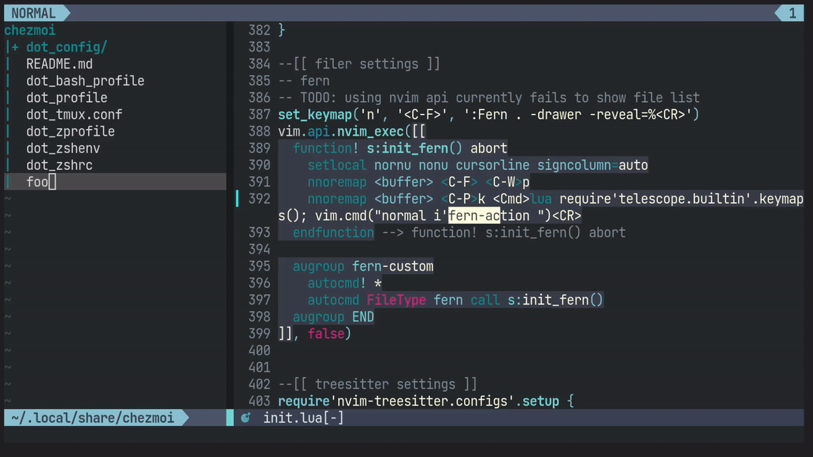

FernはVim/Neovim向けのファイラーで、外部依存がなくパフォーマンスも良好なので、好んで使っています。
また、ファイラーらしく、ファイル操作などの機能を種々揃えており、「action」と呼んでいます。
Fernの画面上でaを押すと、コマンドラインモードでアクションを指定でき、設定してあればタブ補完も効くようです。作者は、ユーザーがキーマッピングを覚えなくて良い点を魅力に挙げています。
しかし、せっかくならよく使う操作はマッピングも覚えてしまいたいところ。
というわけでTelescopeというNeovim向けのFuzzy finderを使って、キーマッピングを曖昧検索 & 実行できるようにしてみました。

上の動画GIFの通り、マッピングとそれによって発動するコマンドが同時に確認できます。たとえば、Rはrenameしてくれるようですね。一方で<Plug>で始まるInternalなマッピングも絞りこめます。今回選択した、ファイル削除のアクションには特にユーザー側でマッピングしていないことがわかります。よく使うけれどマッピングされていないものがあれば、設定ファイルをメンテナンスする良い機会かもしれません。
実現方法は案外単純です。
1と2の部分に関しては以下のようなコマンドで実現できます。
:lua require'telescope.builtin'.keymaps(); vim.cmd("normal i'fern-action ")Telescopeの拡張機能であいまい検索アルゴリズムにfzfを採用している都合上、fern-actionに部分一致の手前に'が入っています。このあたりはご自身の環境に合わせて調整してください。
私は<C-P>kにキーマッピングに対するあいまい検索をマッピングしています。そこで、以下のようにFernのバッファ上では同じマッピングでactionに対するマッピングだけを検索できるようにしています。
function! s:init_fern() abort
nnoremap <buffer> <C-P>k <Cmd>lua require'telescope.builtin'.keymaps(); vim.cmd("normal i'fern-action ")<CR>
endfunction
augroup fern-custom
autocmd! *
autocmd FileType fern call s:init_fern()
augroup ENDENJOY!!